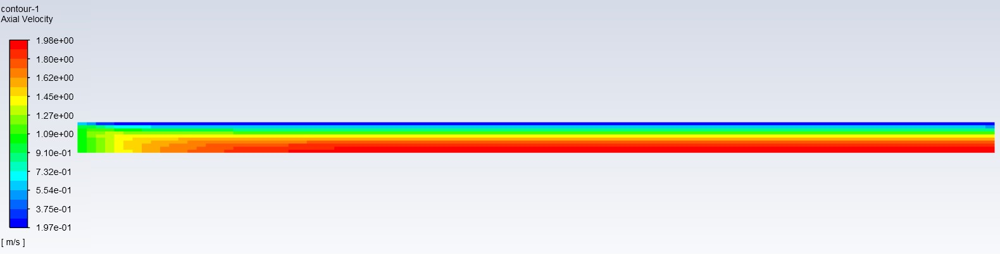
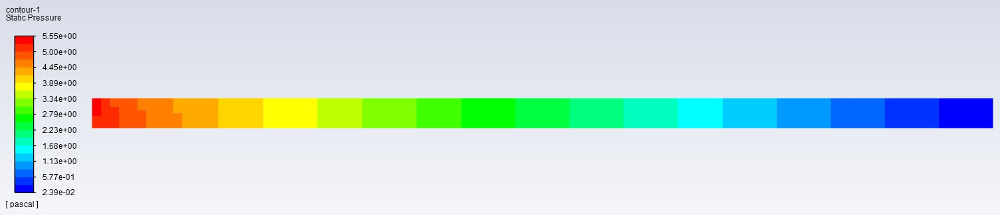
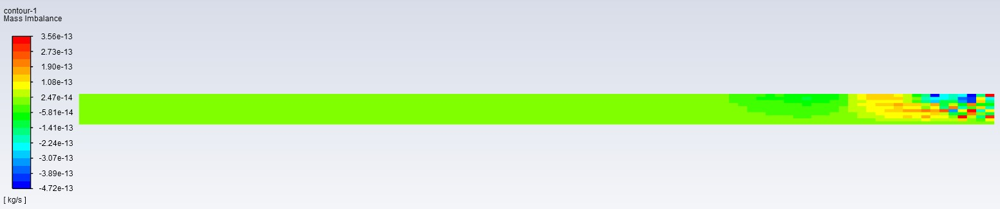

Laminar Flow Study
Laminar pipe flow models using ANSYS Fluent
Using ANSYS Fluent, laminar flow within pipes of both a circular and square cross section were modeled. Below are explanations of the modeling process and the results that were outputted. Due to the similarity of the modeling process for both the cross sections, the explanation will consist of mostly the circular cross section with the results of both cross sections being shown after. Assumptions used in these models include a Reynolds number of 100 (laminar), uniform velocity at the inlet, velocity changes only in the axial direction, and no-slip on the pipe walls.
Mesh Generation
Before generating the pipe flow, the pipe geometry and meshing was done by creating half of the pipe as it would be mirrored along the center axis. Since the pipe is 0.2 meters in diameter and 3 meters in length, a rectangle was made with a width of 0.1 meter and 3 meters in length. Using this geometry, a uniform mesh of 100 x 10 would be used on the x-y face as this is a 2D analysis of the flow. This mesh would then be brought over to ANSYS Fluent.
Setup & Results
Using ANSYS Fluent, the mesh was given boundary conditions by labeling each edge of the 2D mesh. This would allow Fluent to know which edges would be a wall, an inlet, an outlet, and an axis. Additionally, reference values and fluid properties were also established such as density and viscosity.
After these conditions were applied, contours were made of the results outputted by Fluent.
From the results, we see that ANSYS calculated the velocity at the inlet as 1 m/s which matches the boundary condition that was set earlier. At the outlet, the velocity of the fully devloped flow at the axis was found to be around 1.98 m/s which is also reasonable. Finally, there is the layer of blue at the pipe wall signifying a close to 0 m/s velocity showing that the no-slip condition was met as well.
The gauge pressure seen at the inlet is around 5.55 Pa which is the highest in the model. This is accurate as fluid moves from high pressure (inlet) to low pressure (outlet). The gauge pressure seen at the outlet is around .024 Pa which makes sense as it is open to the atmosphere
Error Analysis
Shown in the left graph are the aggregate imbalances of the axial (red) and radial (green) momentums. The exponential decrease of the imbalances towards the set residual of 1e-6 show the decrease in linearization error. The right graph shows the change in the drag coefficient through iterations and there are negligible differences after around 30 iterations.
This contour shows the mass imbalances in each cell which tells us whether mass is being conserved properly. Due to the simplicity of this 2D model, it makes sense to have an extremely low mass imbalance which is good. At a value of 1.8261548e-12 kg/s, there is virtually a 0% imbalance compared to the total flux.
Vertical Square Channel
The vertical square pipe was modeled similarly to the with different values for the pipe dimension and viscosity. Since the channel flow is not circular, the model used in this analysis would be in the Cartesian coordinate system instead of cylindrical.
Results
The results of the vertical channel are not that far off from the horizontal pipe which is expected since they both had the same initial velocity and boundary conditions. However, the slight differences in max velocity (2.0 m/s vs 1.49 m/s) and max pressure (5.55 Pa vs. 1.77 Pa) can be attributed to the greater cross sectional area and a coarser mesh. Both meshes were 100 x 10 but due to the larger geometry of the vertical pipe it becomes less accurate in this case.